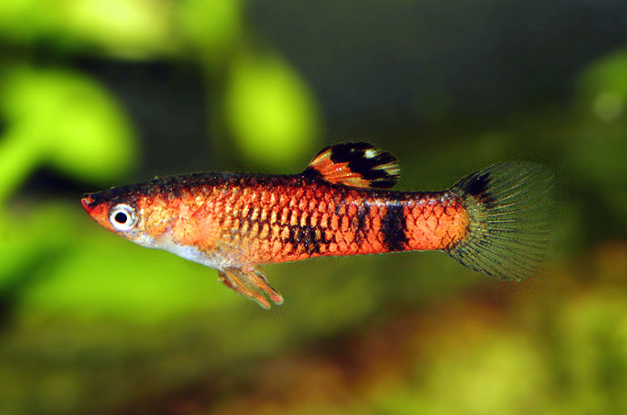
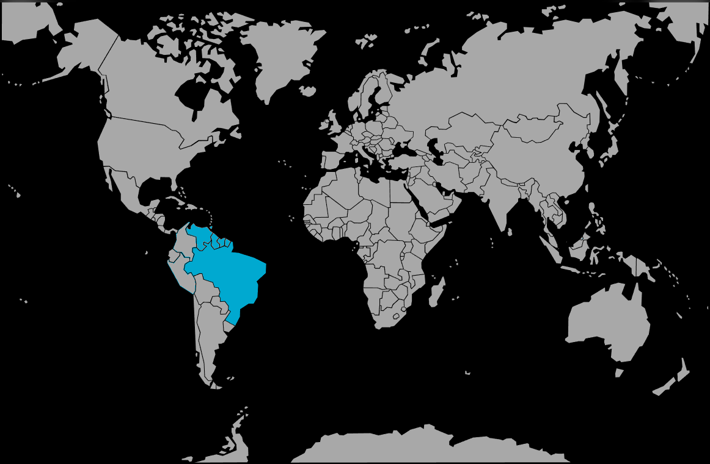

Systématique
- Ordre : Cyprinodontiformes
- Famille : Poeciliidae
- Genre : Micropoecilia
- Espèce : M. picta
- Syn. : Poecilia picta

Micropoecilia picta, le guppy des marais ou guppy des marécages, est un petit poéciliidé vivipare d'Amérique du Sud et des Caraïbes, très proche du guppy commun mais préférant les environnements saumâtres ou très minéralisés.
Le mâle atteint 3 cm, tandis que la femelle mesure 5 cm maximum. Le corps est fusiforme et élancé, légèrement comprimé latéralement. La coloration de base est gris-vert à argentée avec des taches orange à jaune vif, des marques noires et parfois bleues selon la population d'origine. Le mâle arbore des dorsales oranges striées de noir, tandis que la femelle est plus terne et discrètement marquée. Les nageoires pectorales et pelviennes sont transparentes à légèrement teintées d'orange ou jaune. La femelle affiche une tache noire caractéristique à l'arrière du ventre lorsqu'elle est gravide (gravid spot).
Contrairement aux guppies communs, les femelles de cette espèce ne montrent pas de préférence pour les mâles au coloris rouge ou orange prononcé, ce qui différencie nettement l'écologie comportementale de cette espèce.
Micropoecilia picta est une espèce très grégaire demandant la maintenance en groupe cohérent d'au moins 8–10 individus pour optimiser le bien-être. Elle occupe naturellement la surface et la zone médiane, très active lors du jour et se reposant le soir. L'espèce préfère les zones densément plantées offrant nombreuses cachettes.
Les mâles sont extrêmement oppressants envers les femelles, les poursuivant sans cesse pour l'accouplement. Ce comportement peut fatiguer les femelles à tel point qu'elles meurent d'épuisement. Un ratio strict de 2–3 femelles minimum par mâle est obligatoire, et une abondante végétation offrant des refuges aux femelles s'impose. L'espèce peut être maintenue en aquarium légèrement saumâtre ou en eau douce très dure et minéralisée. Elle fuit les eaux douces pures où elle dépérit rapidement.
Mode : ovovivipare; le mâle possède un gonopodium permettant l'insémination directe des femelles. Les mâles dominants sont polygames et se reproduisent chaque saison avec plusieurs femelles.
La gestation dure 21 à 28 jours à température optimale (autour de 24°C). Les femelles donnent naissance à 11 à 25 alevins par portée, les plus grandes femelles pouvant atteindre 25 jeunes. Particularité remarquable comme chez tous les guppies : une seule fécondation permet à la femelle de produire 3 à 4 portées consécutives sur plusieurs mois sans que ne s'ajoute un nouveau mâle.
Les alevins naissent grands (environ 0,8–1 cm) et autonomes, capables de nager et de se nourrir immédiatement. Ils acceptent les nauplii d'artémia fraîchement éclos ou les poudres fines. Les parents peuvent les prédater, d'où l'importance d'une végétation très dense. La croissance est modérée et la maturité sexuelle intervient vers 2–3 mois.
Dimorphisme sexuel : très marqué et visuel; le mâle est plus petit et plus coloré que la femelle, avec des nageoires dorsales striées d'orange et noir. Il possède le gonopodium bien visible pointu. La femelle est plus grande, plus trapue, avec un ventre plus arrondi en période de gestation, et affiche la tache noire caractéristique lors de la maturation ovarienne.
Espérance de vie : environ 2 à 5 ans en captivité en conditions optimales, généralement 2–3 ans en pratique. L'espèce demeure peu documentée sur la longévité en captivité.
Micropoecilia picta fréquente naturellement les eaux saumâtres ou très minéralisées des embouchures de rivières, des lagunes côtières, des marais côtiers et des zones inondées des swamps d'Amérique du Sud. L'habitat affiche une forte végétation marginale et aquatique, des zones vastes densément plantées offrant de nombreux refuges. Contrairement au guppy commun (Poecilia reticulata), cette espèce évite les eaux douces pures et de faible minéralisation, disparaissant graduellement en amont des fleuves où la compétition avec P. reticulata s'intensifie.
L'eau est très dure, alcaline (pH supérieur à 7,5), riche en minéraux dissous et en matière organique. L'espèce tolère une gamme étendue de salinité mais préfère franchement les milieux légèrement à moyennement saumâtres.
Répartition

Origine naturelle :
- Amérique du Sud et Caraïbes : Brésil, Guyana, Guyane française, Suriname, Venezuela, Trinité-et-Tobago.
- Distribution particulièrement dense dans le delta de l'Orénoque et le delta de l'Amazone.
- Habitats fragmentés et côtiers, rarement en amont des fleuves en eau douce pure.
L'espèce s'hybride rarement avec P. reticulata et P. parae mais peut le faire en aquarium si cohabitation prolongée. Très peu importée en aquariophilie commerciale comparée à P. reticulata.
Paramètres de maintenance
Température : 24 à 28 °C; optimum reproducteur 24–26 °C.
pH : 7,5 à 8,5, fortement alcalin; l'espèce dépérit en eau acide ou neutre.
GH : 20 à 40 °dGH minimum, eau extrêmement dure; l'ajout de sels minéraux est très recommandé.
Salinité : tolère jusqu'à 5–15 PSU (eau saumâtre légère); préfère franchement les eaux minéralisées.
Courant : nul à très faible; eaux lentiques.
Volume conseillé : minimum 50 L pour un groupe de 10 individus (ratio 1M : 2–3F); 100 L recommandé pour plusieurs couples sans risque d'épuisement des femelles. Très planté.
Régime alimentaire
Régime : omnivore carnivore; se nourrit de petits invertébrés, insectes aquatiques, cyanobactéries et algues en nature.
En aquarium, accepte flocons fins, granulés, paillettes et nourriture congelée (daphnies, artémias, vers de vase, larves de moustiques). Les proies vivantes sont fortement recommandées pour optimiser les couleurs et la mise en condition reproductrice. L'espèce grignote les algues naturelles se formant aux parois du bac.
Distribution 2 à 3 fois par jour en petites quantités. Une alimentation variée avec accent sur les petits insectes aquatiques et les algivores maintient la vivacité, la coloration et favorise les reproductions naturelles.